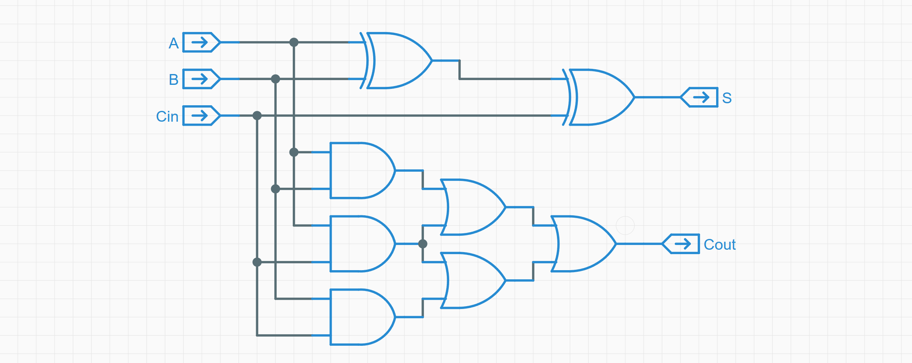
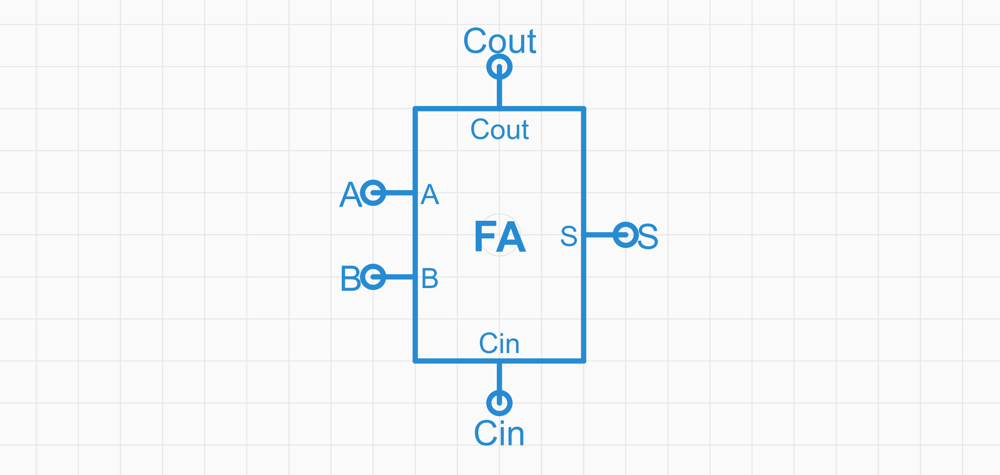
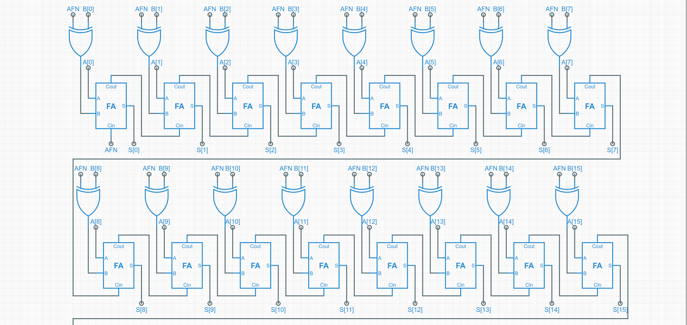
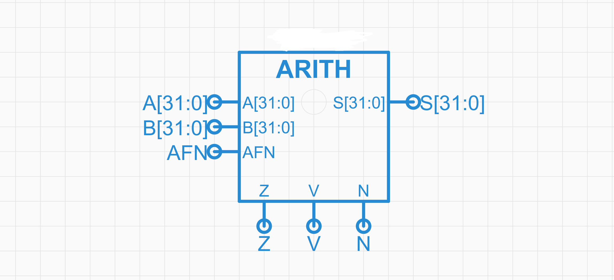
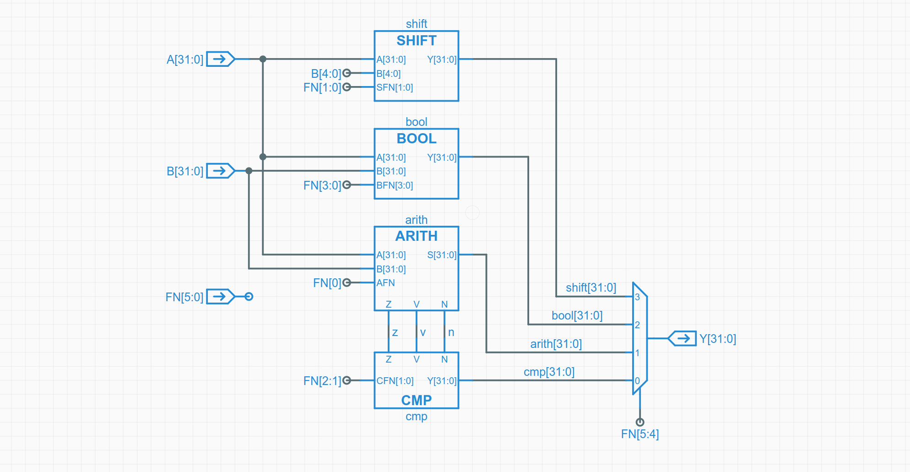
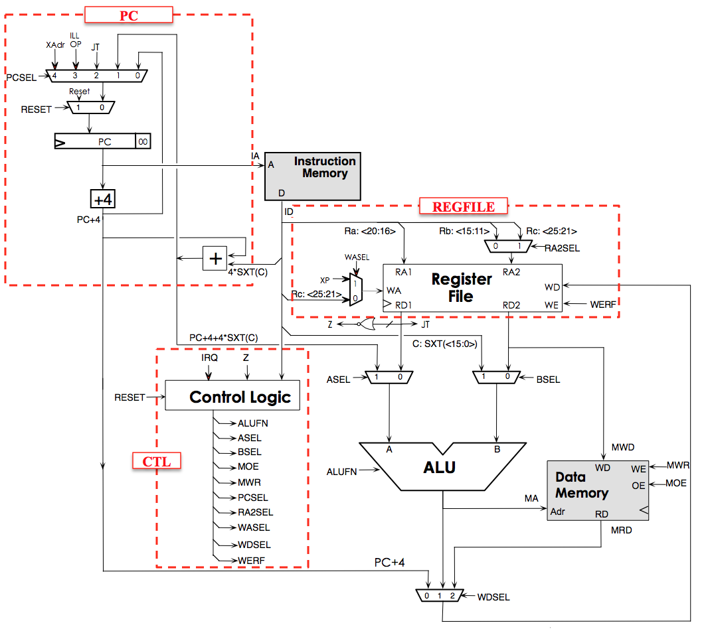
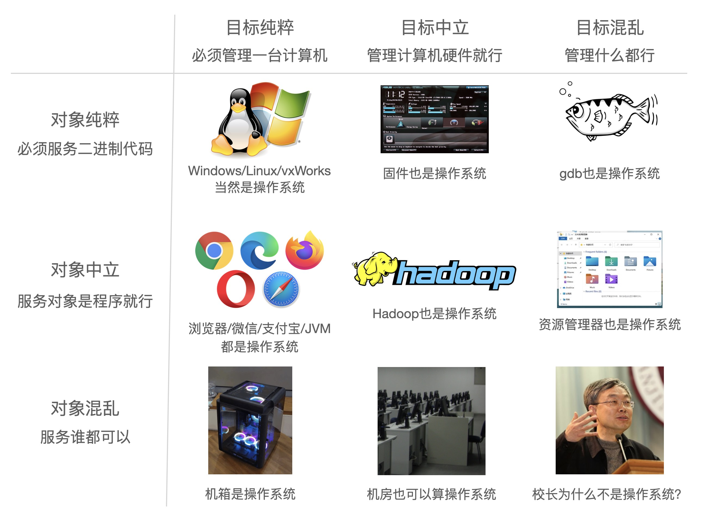

从软件到硬件

计算机的数学视角
计算机系统是严格的数学对象：没有魔法；计算机系统的一切行为都是可观测、可理解的。
- 状态机模型
- 计算机的状态机视角
- 指令集
- 汇编语言和机器语言
- 冯·诺伊曼体系结构
状态机模型
状态机: 表示有限个状态以及在这些状态之间的转移和动作等行为的数学计算模型
- 状态
- 会根据输入（激励）改变自身的状态
- 简单的状态机
- 安静状态 → 看到人 → 吠叫状态
- 吠叫状态 → 人给香肠 → 进食状态
- 进食状态 → 吃完香肠 → 安静状态
计算机是个状态机
- 状态：各个设备的电路状态
- 激励：外部的输入（鼠标、键盘）
程序是个状态机
- 状态：寄存器、内存
- 激励：执行新的指令
指令集
- 输入的指令 -> 要做什么操作
- 程序员和CPU的一种约定
- 常见的指令集:
- x86_64(amd64)
- ARM
- RISC-V
- MISP
- LoongArch
汇编语言和机器语言
- 机器语言
00000040: 4111 06e4 22e0 0008 1705 0000 1305 0500
00000050: 9700 0000 e780 0000 8147 3e85 a260 0264
00000060: 4101 8280
- 汇编语言
main:
addi sp,sp,-16
sd ra,8(sp)
sd s0,0(sp)
addi s0,sp,16
几乎是简单的替换
汇编语言和机器语言
几乎是简单的替换
0000000000000000 <main>:
0: 1141 addi sp,sp,-16
2: e406 sd ra,8(sp)
4: e022 sd s0,0(sp)
6: 0800 addi s0,sp,16
8: 00000517 auipc a0,0x0
c: 00050513 mv a0,a0
10: 00000097 auipc ra,0x0
14: 000080e7 jalr ra #10 <main+0x10>
18: 4781 li a5,0
1a: 853e mv a0,a5
1c: 60a2 ld ra,8(sp)
1e: 6402 ld s0,0(sp)
20: 0141 addi sp,sp,16
22: 8082 ret
体会高级语言到机器语言
- C语言
main.c-> 汇编语言main.S
gcc ./main.c -S ./main.S
- 汇编语言
main.S-> 可执行文件main
gcc ./main.S -o ./main
main并不只包含了机器语言，还包含了指示系统如何运行这个文件的信息。
图灵机
- CPU如何自动计算？
- 下一条指令在哪里？ —— 程序计数器PC
while (1) {
从PC指示的存储器位置取出指令;
执行指令;
更新PC;
}
- 图灵机
- 存储器、PC、加法器
- 从PC指示的存储器位置取指 -> 执行 -> 更新PC
计算机的硬件视角
- 冯·诺伊曼体系结构
- 逻辑门电路
- 运算器
- 处理器
冯·诺伊曼体系结构
-
运算器：ALU
-
控制器：逻辑电路控制器
-
存储器：内存、寄存器
-
总线：
- 输入设备：键盘、鼠标
- 输出设备：显示器
冯·诺伊曼体系结构的核心思想
- 使用二进制表示数据
- 程序指令和数据并存
- 计算机的五个基本组成部分
CPU的执行过程
addi x1, x0, 0xf 0x00f00093

逻辑电路
定义如下规则：
- 非门：一个输入，一个输出，输入输出相反。
- 与门：两个输入，一个输出。两边全是1，则输出为1，否则为0
- 或门：两个输入，一个输出。两边有一个是1，则输出为1，否则为0
- 异或门：两个输入，一个输出。两边不同，则输出为1，否则为0
加法
使用两个异或门和两个与门和一个或门，实现了一个加法器
- A,B：对应的两个加数
- Cin：前一项的进位
- S：计算结果（A,B,Cin有奇数个1则输出1）
- Cout：进位(A,B,Cin有两个为1则输出1)

抽象
将之前的电路抽象成一个icon 这样便无需在意里面的具体细节

加法器组合
逐个拼接就能实现32位，乃至64位的加法
- AFN为1代表是减法
- 减法是以加法为基础来进行计算的

再次抽象
将这个电路模型抽象为一个icon

按照这个思路构建ALUMNI
- SHIFT：实现数据的移位
- BOOL：进行布尔运算
- AIRTH：进行加法减法运算
- CMP：与AIRTH紧密结合，根据其输出判断A,B大小关系

构建CPU
按照这个思路继续抽象，便能得到一个CPU的模型

操作系统
可执行文件并不只包含了该程序的机器语言，还包含了指示系统如何运行这个文件的信息。
- 什么是操作系统？
- 硬件视角的操作系统
- Three Easy Pieces
实验 - 验证可执行文件
获取代码: https://e1psycongroo.github.io/NekoBytes-TheMissing/_site/resources/Lecture3/Codes/os-exec
#include <sys/syscall.h>
#include <unistd.h>
const char str[] = "\033[01;31mHello, OS World\033[0m\n";
const int str_size = sizeof str - 1;
int main(void) {
asm volatile("movl %0, %%eax\n\t" // 系统调用号：SYS_write
"movl $1, %%edi\n\t" // 文件描述符：STDOUT_FILENO (标准输出)
"movq %2, %%rsi\n\t" // 字符串地址
"movl %3, %%edx\n\t" // 字符串长度
"syscall" // 调用系统调用
:
: "r"(SYS_write), "r"(STDOUT_FILENO), "r"(str), "r"(str_size)
: "eax", "edi", "rsi", "edx");
return 0;
}
什么是操作系统？

管理进程、服务进程、管理硬件
内存模型与规范
- 指令集、编译器、操作系统遵循同一规范
- System V ABI

实验 - 栈和堆的地址
获取代码: https://e1psycongroo.github.io/NekoBytes-TheMissing/_site/resources/Lecture3/Codes/stack.c
#include <stdio.h>
#include <stdlib.h>
int main(void) {
int x = 1;
void *y = malloc(sizeof(int));
printf("stack: %p\n", (void *)&x);
printf("heap : %p\n", y);
free(y);
return 0;
}
可能的输出：
stack: 0x7ffd27bb38dc
heap : 0x59e598fe42a0
硬件视角的操作系统
- 只是一个简单的程序（裸机程序）
- 但是直接操作硬件
- 直接发送指令给磁盘
- 直接接受键盘的原始输入
- 直接……
- 以特殊的方式启动其它程序，就像调用一个函数一样
- 将程序加载到内存中，并跳转到程序的入口处。
Three Easy Pieces
- 虚拟化
- 所有进程都以为自己有一整个苹果吃
- 以为自己独占CPU、内存……
- 并行
- 浏览器、VSCode等程序一起运行，同时？
- 在CPU上不断切换正在运行的程序
- 持久化
- 我的2048Game出现了16384！但是这游戏不能存档😭😭😭
- 组织文件系统
拓展 - 操作系统仿真
获取代码： https://e1psycongroo.github.io/NekoBytes-TheMissing/_site/resources/Lecture3/Codes/os-model
enum {
SYS_EXIT, // Process exits
SYS_WRITE, // Write to console with a character
};
typedef struct {
unsigned int syscall;
char arg;
} Syscall;
typedef struct {
int remainingStep; // A process will run remainingStep steps
char charToOutput; // A process will write this character
// to console by doing a syscall
} Process; // Process's Context
拓展 - 操作系统仿真
void run() {
Process *current;
while (process_count()) {
// The Operating System will randomly
// choose a process to run
current = process_schedule();
// Switch process context and run it until a syscall
Syscall call = process_step(current);
if (call.syscall == SYS_EXIT) {
// Process exits
process_exit(current);
} else if (call.syscall == SYS_WRITE) {
// Write the character from syscall arg to the console
putchar(call.arg);
}
}
putchar('\n');
}
拓展 - 操作系统仿真
int main() {
// Initialize the Operating System
init();
// spawn processes
spawn_process(5, 'A');
spawn_process(5, 'B');
spawn_process(5, 'C');
// start running
run();
return 0;
}
可能的输出：
AABCCCBBBCBCAAA
BBAACCCABBACCAB
CAAACBCCBBAACBB